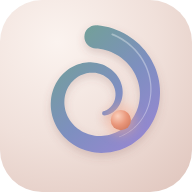

Bonsoir Elodie

Installe Pirou·ET
Ajoute l'appli à ton écran d'accueil : elle s'ouvrira en plein écran, même sans réseau.
Où ?
Combien de temps ?
Ton énergie du jour
Quel format ?
Pause active de 10 minutes, entre ta chaise et ton bureau, sans aller au sol. Idéale en milieu de matinée ou d'après-midi.
Mes étages
0aujourd'hui
Chaque fois que tu prends l'escalier, ajoute tes étages.
Ascension totale0 m
Mon journal
Chaque séance compte, même les petites.